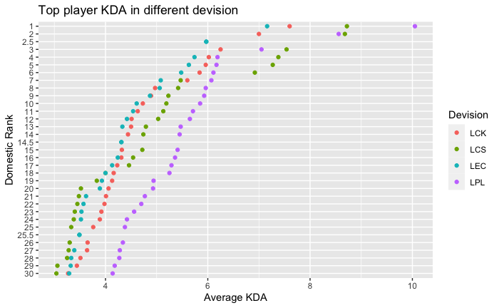

Chapter 4 Results
4.1 1 Relationship between different columns of team performance data
Large variety of team performance data from matches will be recorded into different columns, such as win rates, total kills and deaths, total gold earned during a game, etc.. We are interested in the relationship between pairs of columns of data, for example, is there a positive relationship between total gold earned and win rates, does higher total kills lead to higher gold earned. To visualize such relationship between multidimensional continuous variables, we choose two types of graphs: parallel coordinates plots and PCA biplots.
4.1.1 LPL 2022
The following parallel coordinates plot is generated on 7 columns of data from LPL 2022 tournaments in uni-min-max scale as different columns have different magnitude of values.
Here is what each column of data stands for:
WPM: average ward placed per minute.
winrate: winning rate
KD: kill to death ratio
BN: baron control rate
JNG: average share of games’ total jungle.
GSPD: average gold difference between this team and its opponent
DRG: dragon control rate
Terminologies will be introduced briefly in the following analysis part.
Start from left to right:
- no clear relationship can be derived between WCPM and wining rate since many crosses between lines in this part.
Ward is an prop in game: it can helps to light up parts of maps which the team cannot see before placing wards. Ward in LOL means vision and information, a team with more vision control has more information and is more likely to ambush or gank another team successfully. Many analysts think that how to wisely use ward, i.e, how to wisely control the vision, can positively impact on wining of this game largely, but from this data set, it cannot be proved.
2: there shows a generally positive relationship between winning rate and KD since few cross between lines in this part. This makes sense since intuitively, higher kill to death ratio, i.e, higher kills or lower deaths, should lead to wining of this game, or reversely, winner of this game generally have higher KD.
there also shows a generally positive relationship between KD and BN. Baron is a very significant resource in games as it brings many buffs, while there only exists at most 1 baron at a time, so teams need to compete to get baron. Therefore, the positive relationship also makes sense since higher KD means this team can be more competitive in getting the baron, or reversely buffs from baron can bring this team higher KD.
no clear relationship can be derived between BN and JNG.
Also a generally positive relationship between JNG and GSPD. Jungle can also be considered as an important and competitive resources in games. More shares of jungle brings more gold, so more gold differences, or reversely, more gold differences generating from other resources, like baron,kills, means more competitive in getting more shares of jungle.
Also a generally positive relationship between GSPD and DRG. Dragon is an another important and competitive resource in games. Thus, this positive relationship have similar reasoning as that of part 4.
4.1.2 LPL 2021
The above parallel coordinates plot is generated on the same 7 columns of data from LPL 2021 domestic tournaments.
Most of relationship shows similar pattern as those from LPL 2022. But focus on the 1st part, the claim from analysts who think wards control have large impacts on wining rate can be a little bit more convincing in this data set since there shows a more positive relationship between WPM and wining rate compared to 2022 graph, but there are still a lot of crosses, so we cannot say that there is a positive relationship.
To prove this claim, or to prove correlation between each pair of columns of data, we need many other advanced techniques. In these two parallel coordinates graphs, we can see some general relationship between two columns of data.
4.2 2 Relationship between columns of team performance data and similarity between teams
We will draw PCA biplots using the same 7 columns of data. From biplots, we can further more investigating the relationship between columns of data by rotation vectors. In addition, we are also interested in the similarity between different teams, and biplots can also help us by clustering.
4.2.1 Loading vectors on relationship
The above graphs are two PCA biplots using the same 7 columns of data from LPL 2022 and 2021.
We first focus on th 6 columns except WPM.
Notice that each pair of corresponding vectors to the rest 6 columns are forming a small angle, so it represents that each pair of them are positively correlated.
From parallel coordinates (except WPM column), we also have described that there forms a generally positive relationship between adjacent pairs of columns, and synthesize with PCA, we can see more clearly that, except WPM, EACH pair of the rest 6 columns shows positive relationship between them.
After that, from both graphs, we can notice that WPM meet other columns at angles close to 90°, so it represents that WPM are not very likely to be correlated with other columns, and this result is also consistent with what we found in parallel coordinates since there are many crosses between lines in WPH part.
4.2.2 Clustering graphs on similarity between teams
Then, the above clustering graphs can help to investigate the similarity between teams.
Compare two graphs, we can notice that few teams are clustered in the same group with the same other teams in both years. For example, in 2022, the Ultra Prime is single in one group , while in 2021, it is within the green group with 3 other teams.
Therefore, it means that the similarity and difference between teams are not consistent, or even vary a lot in different time period.
This makes senses with many possible reasons, for example: if this team is good at or bad at the different game versions in different years; one team can have very different players in different years, or although the players don’t change in one team in both years, players’ conditions vary a lot in different time period. These possible reasons impact teams’ performance a lot in different time period, thus the similarity between teams can vary a lot.
4.3 3 Change in LPL teams’ statistics over years
Since from 2nd part, we know that teams performance can vary a lot in different time period. Therefore, we would like to further visualizing how their stat changes over years.
For this part, we picked the 10 Teams with most games played over the 7 years from 2016 to 2022, and plotted time series graphs with respect to their win rate, Kill Death ratio and Ward/Minute. The first value, wining rate is definitely what we care a lot, and often a team will win if they kill more opponents than got killed. Ward, as we described before, could contribute a lot to winning.
4.3.1 Win rate
We can see that the most famous teams (e.g. RNG,IG,EDG…) in general kept more than 50% winning over the years. RNG and EDG specifically has kept great winning rate over the years, that might explain why they had so many fans. We can also see for example IG and WE, though has periods of high winning rate, has lost their lead recently and this also was reflected on their popularity recently. Another interesting observation was OMG and JDG, though seems to lose quite a lot, still managed to play more games than many other teams.
4.3.2 KD
Comparing this and the previous graph, we can see that indeed, teams with higher winning rate corresponds to teams with higher KD ration, which supports the assumption that KD is positively related to Winning rate.
4.3.3 Ward/minute
From this graph, we have interesting observations, wards/min dropped for all teams from 2017 half to 2018 drastically, and also generally increased for all teams after 2018. These observations might indicate some important changes in vision/ward system in those game versions in those years since all changes were synchronous for all teams.
4.4 4 Change in teams’ statistics with respect to player position
LOL is a team game where in each game, we have a 5-member squad. Different members in squad are in charge of different roles in LOL game.
In this part, we aim to analyze how might different factors, i.e., different columns of data, affect win rate within different player role groups.
For example, one might assume a support player, who in charge of vision control, would have a higher winrate if the support player has a higher vision score. This part intends to investigate if hypotheses like these holds or not.
4.4.1 KDA vs wining rate
We first observe one of the most important factor of judging how a player is doing, his KDA ((kill+assist)/death). We can see indeed, players with higher KDA tends to have a higher winrate, these two variables are positively correlated. We can also see some patterns in player roles, it seems like with the same level of win rate, an ordering increasing KDA of player roles follows roughtly the pattern Top<Sup=Jug<Mid<ADC.
4.5 5 Pick and ban (BP)
This part will focus on percentage of pick and ban of champions. Let’s first introduce what is pick and ban.
Before entering the game, two teams will first pick and ban their champions, which we call BP part. Ban of a champion means that both two teams cannot pick this champion. One team can ban 5 champions, so in each game, 10 champions will be banned. After banning, two teams will pick 5 champions for their own.
BP part plays an important role to the final lineup of the squad. BP part is mostly the responsibility of coach and his/her teams.
Many analysts think that thelineup of the squad can be decisive to the victory of this game. Thus, we are also interested to investigate the BP part.
4.5.1 Scatter plot between wining rate and PB
In the above plot, W stands for winning rate. PB stands for percentage of games in which the champion was either banned or picked.
We have an intuition that a “stronger” or a more useful champion in one game version should be picked or banned more often, and “stronger” or more useful also can be more prone to lead to the victory of a game. Therefore, we guess that higher PB values should have a positive relationship between wining rate.
The above plot use data of LPL tournaments from 2013 to 2022, 10 years of data.
We can firstly notice that there is no clear positive relationship between PB and W, which contradicts our intuition. Instead, except those extreme values where W = 0 and 100, the rest values seem to form a normal distribution or uniform distribution.
To check this, we can use heatmap to have a clearer visualization since there are large amount of dots.
4.5.2 Heatmap between wining rate and PB
In the heatmap, we can see that the higher frequency occurs around wining rate = 50% as the lighter part occur there. And it becomes darker spreading out, i.e, the frequency decreases when spreading out.
Therefore, we see no positive relationship between W and PM, and rather, it seems like a normal distribution with median W = 50%. We have a guess that the distribution of wining rate dominates the middle part of these two graphs. Therefore, let’s check the distribution of W by normal QQ plot.
4.5.3 Normal QQ plot on wining rate
In the above normal QQ plot, we filter out those extreme values where W=0 and 100.
Notice that we cannot conclude that wining rates form a normal distribution, while the trend is close to normal distribution. And this trend is also consistent with the trend in the scatter plot and the heatmap. Therefore, we cannot conclude any relationship between W and PB, since the approximate normal distribution trend can be the result of law of large numbers.
4.6 6 BP pattern across devisions
Continuing with BP, this part aims to compare champion ban and pick patterns across regions. There tends to be stereotypes like:LEC and LCS devisions are capable of playing a more variaty of champions compared to LCK and LPL, this graph is to investigate if this holds or not.
Based on the graph, we can see although the four regions holds similar patterns, LPL and LCK on the contarary has more rare picks and bans, which indicate that they either played or saw opponent teams played a champion that rarely appearing in the season. This is exactly the opposite of the stereotype we tried to investigate on which is interesting.
4.7 7 Players’ KDA statistics across region
Similar like all other sports, there are world famous players in LOL e-sports who have large number of fans. Among all factors, what attracts audiences and fans a lot is the killing and death data, since it can represent the ability, or dominance, of players. If you don’t play games at all, you can consider KD as how many scores a basketball player get among this year.
This part aims to investigate star players’ KDA statistics across region and see if there’s any trend.
 Unlike our initial assumption that KDA should not vary this much across region, there seems to be a clear order of top players’ KDAs across region: LPL is a lot higher than the other region. This can, in some extension, represent the style of LPL division: matches in LPL tournaments are often fierce, i.e., they prefer fights rather than operating.
4.8 8 Faker statistics
Perhaps the most famous player in LOL tournaments is Faker, the legendary player since start of LOL tournaments. He wined the world championship for three times among 12, the player with the most championships.
This graph illustrates how faker’s statistics changes over time.
Faker won championship in 2013, 2015 and 2016. Therefore, notice that win rates are high in these three years.
We can see that across these years, faker’s statistics has grown stable as well as a slow decrease, especially DMG%, perhaps due to his increasing age. Age is an especially important factor in Esports’ performance, as younger players has faster response speed and is more capable of intense matching environment for a longer period of time. Therefore, the graph is consistent with what we expect.
4.9 World championship
In this part, we will investigate the performance of each divisions by visualizing how many teams from each division were qualified and finally entered the world championships, and at which round they were finally eliminated.
This data set includes data from 2019 to 2022, the recent 3 world championships.
The alluviums are colored by Class1, which is the division.
class 1 represents how many teams from each division were qualified to enter World in these three years. Notice that China, Europe, Korea, North America have the most teams qualified, and these four divisions are four major divisions.
Class 2 represents at which round the teams were eliminated. From top, final winner, to bottom, playin, we can clearly notice by color that most of green alluviums and orange alluviums gather in the top, which represent teams from China and Korea often had good performance as they often entered finals and semifinals.
After green and orange, there gathers yellow and blue alluviums, which are Europe and NA. Therefore, four major divisions often had better results than other divisions, and among 4, China and Korea were more competitive in getting the final world champions.